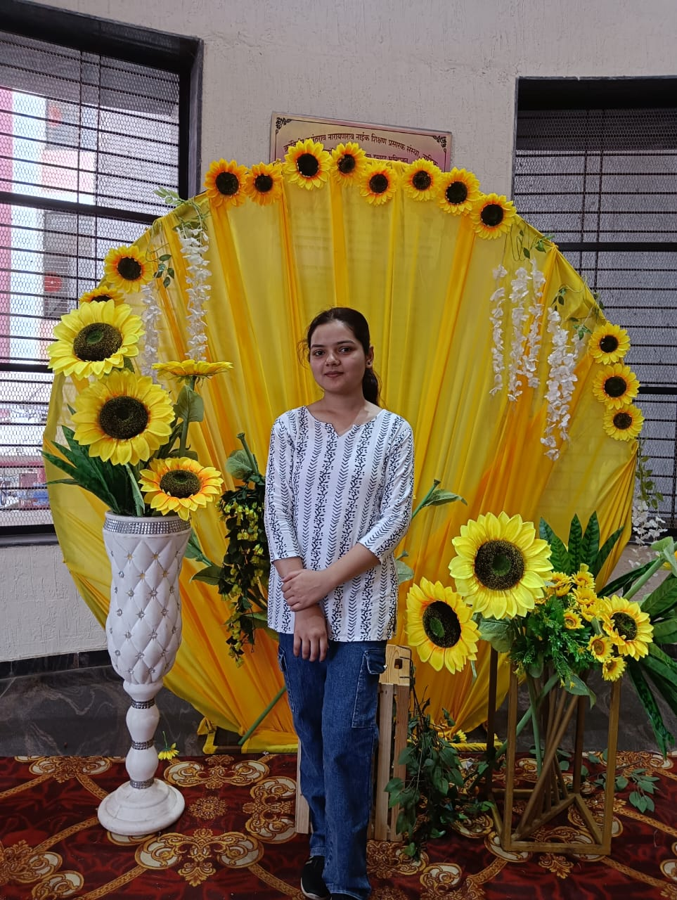

About Me

👋 I’m Kiran Pal, a passionate Full Stack Web Developer, dedicated to crafting responsive and visually engaging web applications.
💡 I enjoy turning ideas into real, interactive digital experiences
using technologies like HTML, CSS, JavaScript, and frameworks such as Bootstrap.
🔍 Over time, my curiosity and drive to understand the complete web development
process have led me to explore backend technologies as well.
📈 I’m constantly working to improve my skills, keep up with industry trends, and follow best practices in both frontend and backend development.
Education
🏫SSC
June 2021
K.V.N Naik High School
Completed Secondary Education with 93% Marks.
🎓Diploma Completed (CSE)
2021–2024
Loknete Gopinathji Munde Institute of Engineering, Nashik
Completed diploma with hands-on experience in C#.NET applications.
🎯Bachelor of Engineering in CSE (Pursuing)
2024–2027
G.E.S R.H. Sapat College of Engineering, Nashik
Focused on full stack development and modern web technologies.